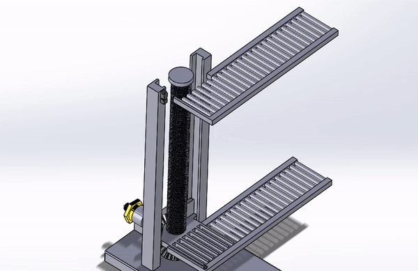
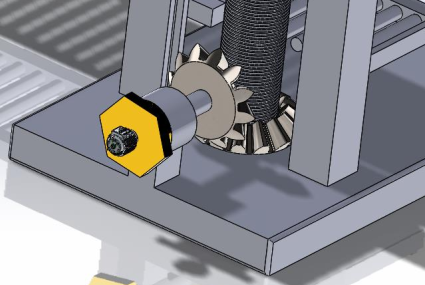
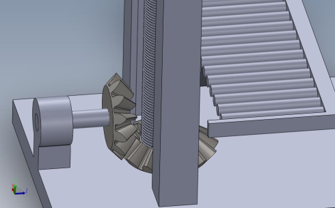
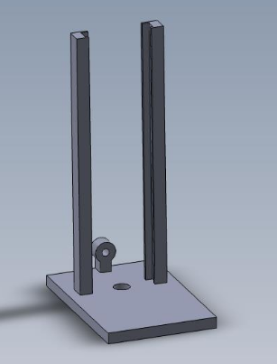
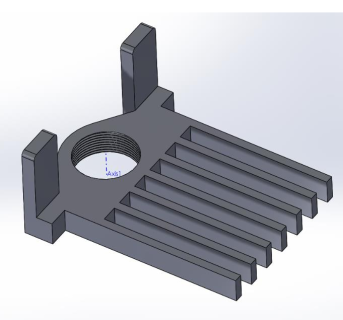
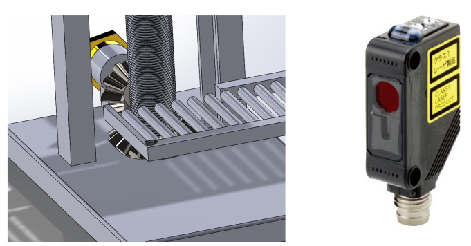
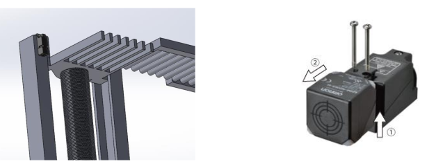

Robot System Design (2024)


Overview
As part of a simulation study using SolidWorks, I designed a vertical lift conveyor to address the challenges of efficient vertical transportation of goods in space-constrained industrial environments.The project aimed to design a compact, reliable conveyor system capable of moving objects vertically within a limited footprint.

The core mechanism of the Vertical Lift Conveyor is based on a bevel gear system working in tandem with a threaded shaft. This design ensures precise vertical movement, with the bevel gears efficiently transmitting power through perpendicular axes. The bevel gear’s self-locking capability prevents the platform from descending under its own weight when the motor is not powered.
 
The main frame and platform of the Vertical Lift Conveyor are designed to provide stability and support for the system, accommodating a maximum load of 3 kg on a 300 mm x 300 mm surface. The platform, attached to a threaded shaft, ensures precise vertical motion, while parallel rails with strategic gaps allow for secure load transfer without manual intervention. A reducing motor coupler facilitates the efficient transmission of torque from the motor to the threaded shaft, ensuring controlled and reliable operation throughout the lifting process.
 
The conveyor system is powered by a brushed DC motor controlled via Cytron’s MD25HV motor driver. This driver was selected for its compatibility with the motor's voltage and current requirements, as well as its safety features like overcurrent and temperature protection, which are critical for reliable operation.

The system incorporates Omron E3ZLR66 photoelectric sensors for load detection and Omron E2Q6 proximity sensors for precise positioning of the platform. These sensors ensure that the conveyor operates efficiently and safely by initiating movement only when necessary and stopping the platform accurately at the desired height.


For more details, you can view the project report:
Project information
- Category Academic project
- Client Swinburne University of Technology
- Project date April 2024 - May 2024
- Visit Website